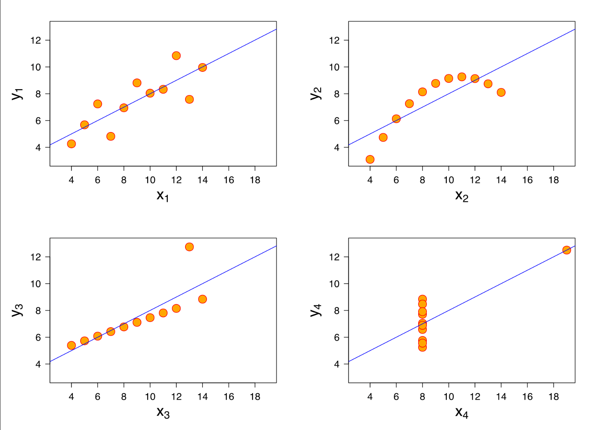

Solving Problems with Data Science
Contents
Solving Problems with Data Science#
The beginning of a textbook by Josh Clinton and Nick Eubank.
Few fields have shown as much promise to address the world’s problems as data science. Today, data science is being used to develop climate models to improve our understanding of global climate change and mitigate its effects. It is being used in medicine to speed drug discovery, improve the quality of our x-rays and MRIs, and to ensure that patients receive appropriate medical care. Data science is used in courtrooms to fight for fair elections and electoral maps, and by data journalists to document and communicate to readers the injustices prevalent in our criminal justice system and issues in policing. Autonomous drones are delivering blood and medical supplies to rural health clinics from Rwanda to North Carolina. Driver aid features and autonomous cars continue to make progress in reducing the over 30,000 traffic deaths and millions of injuries that occur in the US alone every year. And nearly no facet of business has gone untouched by the recent revolution in data analytics, from song and movie recommendation engines on Netflix, Spotify, and the Apple App Store to the use of personalized, targeted advertisements used to ensure businesses can make the most of their advertising revenue, and the supply chain and logistics systems that have completely changed how and where goods are produced around the world
At the same time, however, recent years have also made clear that today’s global challenges will not be met by simply “throwing data science at the problem” and hoping things will work out. Even in business, where many assume that Artificial Intelligence is a sure ticket to profits, a major recent study found only 11% of businesses that had piloted or employed Artificial Intelligence had reaped a sizeable return on their AI investments. In recent years we’ve also seen near endless examples of data science tools reinforcing racial and gender inequities in our social, like algorithms discriminating against female job candidates at Amazon, prioritizing White patients over Black patients for kidney transplants and preventative care, and being more likely to incorrectly identify Black defendants than White defendants as being a “danger to society” when providing risk assessments to judges deciding on pre-trial release, bail and sentencing. And even companies like Facebook’s own research have shown its algorithms drive political polarization and division among users, and push users into extremist groups.1
How, then, should a burgeoning data scientist approach this field full of such promise but also so many pitfalls? In this book, we will present a framework for approaching and solving problems with data science in a way that is both effective and responsible.
Our approach is to begin by carefully specifying the problem one needs to solve. While this may seem trivial, properly articulating the core problem one seeks to address can be remarkably difficult. Moreover, because everything you will do after this step is premised on having correctly specified your objective, it is the greatest determinant of the success of your project. As Charles Kettering, Head of Research at General Motors from 1920 to 1947 once said, “A problem well stated is a problem half solved.”
Once we have successfully articulated our problem, we must then figure out how to solve it. And as data scientists, we are somewhat restricted in the types of solutions to which we have access; data science cannot just raise funds for a project, for example, or invent a new technology. Rather, as we will explore in detail in this book, all data science models and algorithms can be fundamentally understood as instruments for answering questions about the world using quantitative methods.
In light of that fact, our challenge turns from the more amorphous task of just “figuring out how to solve the problem” to the more concrete “figure out what question, if answered, would make it easier to solve this problem.”
Once we’ve articulated a question, we then turn to choosing the best tool to generate an answer. And it is only at this stage of our project—not at the beginning!—that we start thinking about different statistical methods, algorithms, or models.
But even at this stage, our job as data scientists is not to just grab the trendiest tool for a given type of question. Rather, we must recognize and evaluate the strengths and weaknesses of different tools available to us in the context of the specific problem we are seeking to address.
While this may seem an impossible task given the sheer multiplicity of data science methods available today, we can divide the data science questions we seek to answer into three groups: descriptive/exploratory questions, passive predictive questions, and causal questions. Each of these can play a different but important role in solving problems, and any effort to answer a question of each type will raise similar issues that need to be considered. Thus, by recognizing the class of question we are seeking to answer, we can significantly narrow both the set of data science tools that are appropriate to consider, and provide a short list of common considerations to think through.
In particular, in this book we will divide the types of questions we may want to answer into three categories: exploratory questions, passive-predictive questions, and causal questions.
Exploratory Questions#
Once you have settled on a problem you wish to address, the next step is often to use data science to better understand the contours of the problem in order to better prioritize and strategize your efforts. To do this, as data scientists we often begin by asking exploratory questions to help us understand the problem space.
Suppose, for example, you are interested in developing machine learning algorithms they could be used to improve the energy efficiency of buildings. Before you run off and try to start training a neural network, the first thing you might want to do is figure out what type of buildings are actually using the most energy so you can think about where you can have the most impact—is more CO2 being generated by air conditioning office buildings in hot climates, or heating office buildings in cold climates? And if you’re hoping to run a business, you might also want to know “in what parts of the country is electricity most expensive?” since you’re more likely to find customers in places where energy costs are high.
Generating answers to questions like this may not seem as trendy as using expensive GPUs to train deep learning models, but it is the type of exploratory data analysis that will help ensure that your subsequent efforts are well-directed.
Note
The term Exploratory Data Analysis (EDA) is often used in statistics courses to describe the process of poking around in a new data set that you have been given before you fit a more complicated statistical model. While many of the tools that you may use to do that type of poking around are the same tools that you would use to answer more sophisticated Descriptive Questions, when we talk about answering Descriptive Questions in this book, we are generally talking about a much more involved process—one that often requires locating or bringing together new data sources—then this type of “data checking.”
Fundamentally, answering exploratory questions is about identifying salient patterns in your data that help you understand the overall distribution of features in the world. At times this can be accomplished with simple tools, like scatter plots, histograms, and calculating summary statistics like means and medians. Other times, however, it may require more sophisticated methods, like unsupervised machine learning algorithms that can, say, identify specific “customer-types” in a large dataset of customer behavior.
Regardless of the specific methods being employed, however, answering exploratory questions always boils down to the same challenge: to take large datasets that aren’t comprehensible to people in their raw form, and to identify meaningful patterns in the data that can be summarized in a manner that humans can actually wrap their heads around. And why is this hard? Because by definition, answering exploratory questions requires trying to find ways to make the incomprehensible comprehensible by identifying meaningful patterns. And while we have many tools for calculating specific types of data summaries—means, medians, clustering algorithms, principal component analyses, etc.—none of these can evaluate whether the summaries they generate are faithful and meaningful to the question you are seeking to answer. And it is therefore up to you, the data scientist, to decide what summaries of the data provide a faithful and meaningful representation of the underlying data.
What do we mean by “faithful and meaningful” summaries? To illustrate, suppose that you have been hired by the US state of Florida to help with a financial problem they’re having. They buy a lot of electricity that’s generated with natural gas, but as a result their electricity costs keep bouncing up and down with natural gas prices. As this makes it hard for them to do financial planning, they’ve asked you to find a financial asset the city can buy that will smooth out these fluctuations. More specifically, they want an asset that will pay out more when natural gas prices are high (so they can use the money to offset their increased electricity costs), and less when natural gas is low.
They’ve given you data on four potential assets, and so you run a linear regression looking at the relationship between the value of these assets and natural gas prices. You analyze the data by looking at the correlation between the asset’s payout and natural gas prices, and by fitting a linear regression with natural gas prices and asset payouts. You find that all four assets have essentially identical relationships with natural gas prices—a correlation of about 0.8, and a regression coefficient of about 0.5, suggesting that when natural gas prices rise by a dollar, asset payouts will increase by 0.50 dollars. Perfect, right? All four assets would work equally well, and all four could help limit budget fluctuations for Florida!
Well… no. Because if we dig a little deeper, we see that these summary statistics are not telling us all the meaningful information in the data; our summary statistics are technically correct, but they aren’t faithfully representing everything that matters given the problem we want to solve.
We can see this by plotting the data2 (nb: these plots are embarrassingly unlabeled, and this example needs some refinement! I’m working on it. :)):

Clearly, the relationship between these different assets and natural gas prices are not all the same! Buying the asset in the top left would likely do a good job of smoothing out the state’s budget, but in nearly all years, the asset in the bottom right would be useless for smoothing the state’s budget since in most years the asset’s payoff doesn’t change at all!
This is obviously a simple example, and one where a simple plot is sufficient to allow us to see the problem. But this problem is inherent to answering any exploratory question—whether we’re calculating simple statistics or using sophisticated unsupervised machine learning techniques; when we summarize data, it is our job as data scientists to ensure that our summaries are representing the relevant patterns in the data in a faithful and meaningful manner. And because what is relevant depends on the problem we are trying to solve, it’s something we as data scientists have to evaluate, not something an algorithm can do for us.
Passive Prediction Questions#
Answering exploratory questions helps the data scientist prioritize their efforts, but once they have zeroed in on a specific problem they want to address and a facet of the problem they wish to prioritize, many data science projects take the form of answering “passive prediction” questions.
Where exploratory questions are questions about the overall distribution of features in the world, passive predictive questions are usually questions about individual entities, and take the form of questions like “given this new customer’s behavior on my website, are they likely to spend a lot over the next year?,” or “given the symptoms of this patient and their test results, how likely are they to develop complications after surgery?” In other words, these are questions whose answers are predictions about something we can’t immediately observe.
The “passive” in passive prediction emphasizes that these are questions about predicting what is likely to happen if we don’t intervene in the world. As we will discuss below, understanding the effect of changes we deliberately introduce in the world—for example, by changing a government policy, or re-designing our website—requires a different set of tools.
Not all passive prediction questions are about events in the future; some passive prediction questions are about predicting how a third party would behave or interpret something if given the chance. For example, suppose we wanted to use data science to analyze mammograms.3 One way to think about what we are doing is that we are trying to answer the predictive question: “if a radiologist looked at this scan, would they think the patient had cancer?” Or if we wanted to use data science to review job applicants resumés to determine who a company should hire, we could think of what we’re doing as answering the question “if a hiring manager looked at this resumé, would they want to interview this candidate?”
This may seem a slightly odd way to think about these types of problems, but as we’ll discuss later, this way of framing data science problems is very powerful. In fact, it is usually a more accurate description of what many machine learning models are actually doing. That’s because many data science problems are solved using a practice called supervised machine learning in which a statistical model is “trained” using data that a human has already analyzed. Our mammogram analyzing algorithm, for example, could be trained by providing it with examples of mammograms that human radiologists have already reviewed and labelled as having cancer or not having cancer. This data would then be fed to a supervised machine learning algorithm and used to develop a statistical model for differentiating mammograms with and without cancer.
But a critical feature of this supervised machine learning approach is that the model is being taught to emulate the behavior of the humans that analyzed the training data. If successful, we would end up with an algorithm that looks like it is “detecting cancer,” but what it is really trying to do is answer the question “if a radiologist looked at the scan, would they diagnose the patient with cancer.” This distinction is subtle, but it is important, because it helps us to understand that any algorithm that we create through this type of process will inherent all of the biases and limitations of the radiologists who created the data used to train the algorithm. If, for example, our radiologists were less likely to see cancer in denser breast tissue, that bias will also be inherited by the algorithm.
This problem of supervised machine learning algorithms inheriting the biases of whoever labelled its training data is particularly pernicious when algorithms are used in domains subject to human bias, like hiring. If an algorithm is trained to review job applicants’ resumés by showing it the resumés of past hires and manager ratings of those current employees, then any tendency of a company’s managers to rate men better than women will result in the algorithm preferring the resumés of men over those of women. And no, sadly you can’t just try to hide applicant gender from the algorithm—by design we develop our algorithms to look for subtle signals for anything that helps them emulate the behavior of whomever labelled their training data, so our algorithms would likely still pick up on hidden signals, like whether the applicant attended an all-women’s college, or participated in a sport like field hockey.
Causal Questions#
The final type of question regularly faced by data scientists is perhaps the hardest to answer: causal questions.
Learning to answer the previous two classes of questions can take a data scientist a long way in life—learning to answer descriptive questions will ensure you prioritize your efforts when wrestling with new problems, and the value of passive-prediction to automate a huge number of analysis tasks is self-evident. But often in life we want to go beyond passively characterizing the world around us. We want to intervene; we want to act on the world. But before we attempt to manipulate anything about the world around us—by launching an advertising campaign, or a new government program, or changing the design of our website—we often want to know the effect our actions will have. And that is the domain of causal questions.
Causal questions, therefore, take the form of “what is the effect of X on Y?”, or more usefully “if I do X, how will Y change?” These are hard to answer, of course, because we are fundamentally interested in comparing the value of some outcome Y in two states of the world: the world where we do X, and the world where we don’t do X. But as we only get to live in one universe, it turns out that we can never perfectly know what value of some outcome Y would be in both a world where we do X and one where we don’t do X. If we’re a website we can do X with some users, and not do X with others and compare how their behavior changes, or we can measure Y before we do X and compare it to Y after we do X, but as we will see none of these strategies are perfect. In the example of doing X to only some users, it’s always possible that the users who experienced X might have just been from those who didn’t encounter X for reasons unrelated to our intervention; and while we can measure Y before and after doing X, maybe Y was going to change over time anyway, regardless of us doing X!
As we will see, while answering causal questions is one of the most exciting things we get to do in data science, it is also one of the hardest. And perhaps more than in any other domain of data science, answering causal questions—a practice referred to as causal inference—will require a lot of critical thinking on the part of the data scientist, and a lot of humility.
- 1
Recent reporting by the Wall Street Journal has shown that Facebook’s own research has confirmed what many outside experts have long argued: the way its recommendation engines prioritize content that results in “user engagement” (clicks, shares, comments) ends up promoting partisan, polarizing, sensationalist, or extreme content. In addition, their own research has also shown that group recommendations are contributing to extremism. According to one internal presentation, “64% of all extremist group joins are due to our recommendation tools” like Groups You Should Join and other discovery tools.
- 2
Anscombe’s quartet. (2022, October 21). In Wikipedia. https://en.wikipedia.org/wiki/Anscombe%27s_quartet
- 3
Mammograms is an x-ray of breast tissue used for the detection of breast cancer.